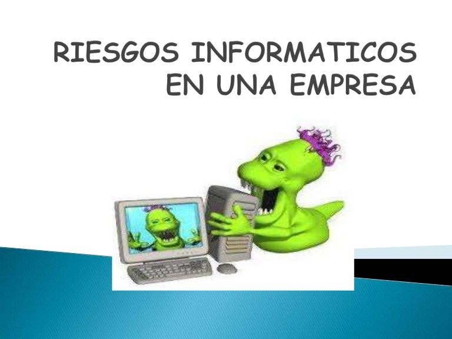

El análisis de riesgos informáticos es un proceso que comprende la identificación de activos informáticos, sus vulnerabilidades y amenazas a los que se encuentran expuestos así como su probabilidad de ocurrencia y el impacto de las mismas, a fin de determinar los controles adecuados para aceptar, disminuir, transferir o evitar la ocurrencia del riesgo.
Teniendo en cuenta que la explotación de un riesgo causaría daños o pérdidas financieras o administrativas a una empresa u organización, se tiene la necesidad de poder estimar la magnitud del impacto del riesgo a que se encuentra expuesta mediante la aplicación de controles. Dichos controles, para que sean efectivos, deben ser implementados en conjunto formando una arquitectura de seguridad con la finalidad de preservar las propiedades de confidencialidad, integridad y disponibilidad de los recursos objetos de riesgo.
Elementos de un análisis de riesgo[editar]
El proceso de análisis de riesgo genera habitualmente un documento al cual se le conoce como matriz de riesgo. En este documento se muestran los elementos identificados, la manera en que se relacionan y los cálculos realizados. Este análisis de riesgo es indispensable para lograr una correcta administración del riesgo. La administración del riesgo hace referencia a la gestión de los recursos de la organización. Existen diferentes tipos de riesgos como el riesgo residual y riesgo total así como también el tratamiento del riesgo, evaluación del riesgo y gestión del riesgo entre otras. La fórmula para determinar el riesgo total es:
RT (Riesgo Total) = Probabilidad x Impacto Promedio
A partir de esta fórmula determinaremos su tratamiento y después de aplicar los controles podremos obtener el riesgo residual.
